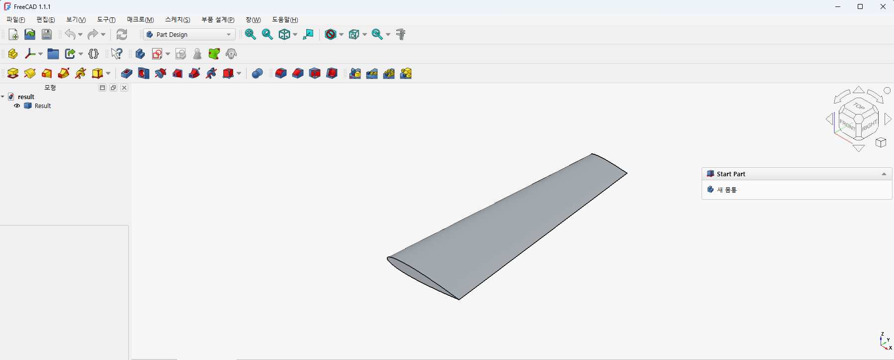

01PROJECT 01 · 2026

NATURAL LANGUAGE-TO-CAD
Text2CAD: Local LLM 기반 FreeCAD 생성
자연어로 작성한 부품 요구사항을 Local LLM이 구조화된 설계 명세와 FreeCAD Python 코드로 변환하고, 생성된 형상의 치수와 구조를 검증하는 과정을 연구합니다.
Natural Language→Local LLM→Plan JSON→FreeCAD
RESEARCH
자연어에서 CAD 모델로 이어지는 생성 과정과
기계 설계·해석에 적용하는 AI 연구를 기록합니다.

NATURAL LANGUAGE-TO-CAD
자연어로 작성한 부품 요구사항을 Local LLM이 구조화된 설계 명세와 FreeCAD Python 코드로 변환하고, 생성된 형상의 치수와 구조를 검증하는 과정을 연구합니다.
UPCOMING
후속 실험과 연구 발표 내용을 이 페이지에 이어서 추가합니다.